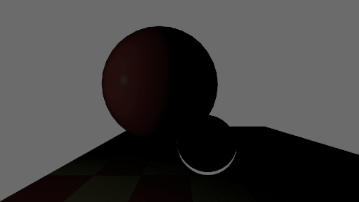
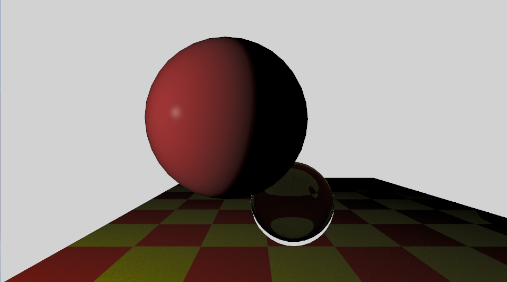
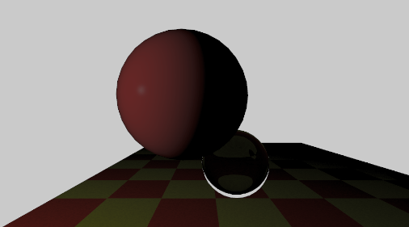
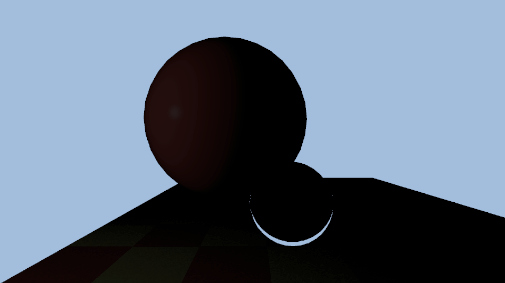
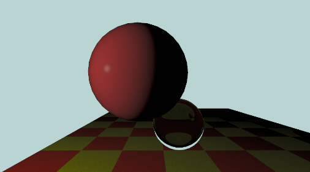
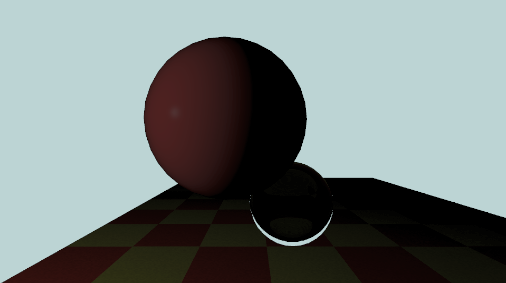
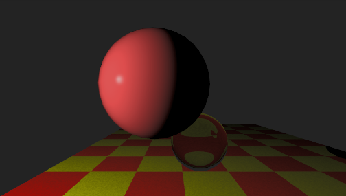
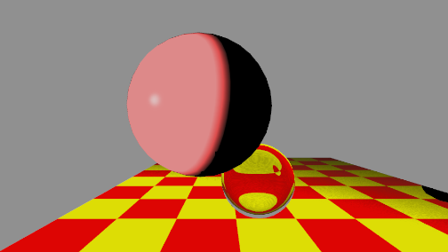
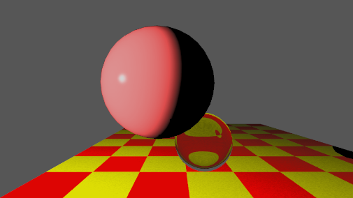

Tone Reproduction
A lot of things going on for just adjusting colors
Lo-Range Lighting

Without tone reproduction.

Ward.

Reinhard.
Mid-Range Lighting

Without.

Ward.

Reinhard.
Hi-Range Lighting

Without.

Ward.

Reinhard.
Implementation Overview
Please note my monitor is a HDR monitor, Windows screenshots adjusted the color to sRGB, but it may not be very accurate.
In the screenshots, Ward Ldmax is set to 100 cd/m².
Ward model requires an average luminance of the image in order to compute the tone reproduction. Unfortunately, Unity compute shader doesn't have the ability to access the entire image at once. And I was not going to use built-in mipmaps for it(since this is an assignment).
Two-pass solution was a choice, but I tried to implement it with a single pass. Therefore, Parallel Reduction is used, we run 3 kernels instead of 1.
3 kernels
// Compute shader
groupshared float2 _SharedLum[64]; // 8*8 threads per group
[numthreads(8, 8, 1)]
void CSMain(uint3 id : SV_DispatchThreadID,
uint3 groupId : SV_GroupID,
uint groupIndex : SV_GroupIndex)
{
uint width, height;
_HDRBuffer.GetDimensions(width, height);
bool inBounds = (id.x < width && id.y < height);
float3 totalIrradiance = float3(0, 0, 0);
if (inBounds)
{
float2 subPixelOffset = 0.5;
float2 uv = float2((id.xy + subPixelOffset) / float2(width, height) * 2.0 - 1.0);
float3 rayOriginWS = _WorldSpaceCameraPos;
float3 rayDirectionCS = float3(uv.x * _AspectRatio, uv.y, -_FocalLength);
float3 rayDirectionWS = normalize(mul(_CameraToWorld, float4(rayDirectionCS, 0)).xyz);
totalIrradiance = TraceRay(rayOriginWS, rayDirectionWS);
_HDRBuffer[id.xy] = float4(totalIrradiance, 1);
}
// Per-tile log-luminance reduction for Ward Lwa
float lum = dot(totalIrradiance, float3(0.2126, 0.7152, 0.0722));
_SharedLum[groupIndex] = inBounds ? float2(log(max(lum, 0.0001)), 1.0) : float2(0.0, 0.0);
GroupMemoryBarrierWithGroupSync();
// Parallel reduce 64 → 1
if (groupIndex < 32) { _SharedLum[groupIndex] += _SharedLum[groupIndex + 32]; } GroupMemoryBarrierWithGroupSync();
if (groupIndex < 16) { _SharedLum[groupIndex] += _SharedLum[groupIndex + 16]; } GroupMemoryBarrierWithGroupSync();
if (groupIndex < 8) { _SharedLum[groupIndex] += _SharedLum[groupIndex + 8]; } GroupMemoryBarrierWithGroupSync();
if (groupIndex < 4) { _SharedLum[groupIndex] += _SharedLum[groupIndex + 4]; } GroupMemoryBarrierWithGroupSync();
if (groupIndex < 2) { _SharedLum[groupIndex] += _SharedLum[groupIndex + 2]; } GroupMemoryBarrierWithGroupSync();
if (groupIndex < 1) { _SharedLum[groupIndex] += _SharedLum[groupIndex + 1]; } GroupMemoryBarrierWithGroupSync();
if (groupIndex == 0)
{
uint gi = groupId.y * (uint)_NumGroupsX + groupId.x;
_PartialBuffer[gi] = _SharedLum[0];
}
}
// --- CSLogAvg: reduces _PartialBuffer (per-tile log-lum partial sums) → _LwaBuffer[0] ---
groupshared float2 _SharedPartial[256];
[numthreads(256, 1, 1)]
void CSLogAvg(uint groupIndex : SV_GroupIndex)
{
// Each thread accumulates multiple entries (stride = 256)
float2 localSum = float2(0.0, 0.0);
for (uint i = groupIndex; i < (uint)_NumGroups; i += 256)
localSum += _PartialBuffer[i];
_SharedPartial[groupIndex] = localSum;
GroupMemoryBarrierWithGroupSync();
// Parallel reduce 256 → 1
if (groupIndex < 128) { _SharedPartial[groupIndex] += _SharedPartial[groupIndex + 128]; } GroupMemoryBarrierWithGroupSync();
if (groupIndex < 64) { _SharedPartial[groupIndex] += _SharedPartial[groupIndex + 64]; } GroupMemoryBarrierWithGroupSync();
if (groupIndex < 32) { _SharedPartial[groupIndex] += _SharedPartial[groupIndex + 32]; } GroupMemoryBarrierWithGroupSync();
if (groupIndex < 16) { _SharedPartial[groupIndex] += _SharedPartial[groupIndex + 16]; } GroupMemoryBarrierWithGroupSync();
if (groupIndex < 8) { _SharedPartial[groupIndex] += _SharedPartial[groupIndex + 8]; } GroupMemoryBarrierWithGroupSync();
if (groupIndex < 4) { _SharedPartial[groupIndex] += _SharedPartial[groupIndex + 4]; } GroupMemoryBarrierWithGroupSync();
if (groupIndex < 2) { _SharedPartial[groupIndex] += _SharedPartial[groupIndex + 2]; } GroupMemoryBarrierWithGroupSync();
if (groupIndex < 1) { _SharedPartial[groupIndex] += _SharedPartial[groupIndex + 1]; } GroupMemoryBarrierWithGroupSync();
if (groupIndex == 0)
_LwaBuffer[0] = exp(_SharedPartial[0].x / max(_SharedPartial[0].y, 1.0));
}
// --- CSToneMap: Ward / Reinhard tone reproduction using GPU-computed Lwa ---
[numthreads(8, 8, 1)]
void CSToneMap(uint3 id : SV_DispatchThreadID)
{
uint width, height;
Result.GetDimensions(width, height);
if (id.x >= width || id.y >= height) return;
float3 radiance = _HDRBuffer[id.xy].rgb;
float Lw = dot(radiance, float3(0.2126, 0.7152, 0.0722));
float Lwa = _LwaBuffer[0];
if (_ToneMode == 3)
{
// No tone mapping — output raw HDR radiance directly
Result[id.xy] = float4(radiance, 1);
return;
}
float Ld;
if (_ToneMode == 0)
{
// Ward (1994): contrast-based scale factor
// sf = ((1.219 + (LdMax/2)^0.4) / (1.219 + Lwa^0.4))^2.5
float sfNum = 1.219 + pow(_LdMax / 2.0, 0.4);
float sfDen = 1.219 + pow(max(Lwa, EPSILON), 0.4);
float sf = pow(sfNum / sfDen, 2.5);
Ld = clamp(sf * Lw, 0.0, 1.0);
}
else
{
// Reinhard (2002): determine key value a
float a;
if (_ToneMode == 1)
{
// Constant key: user-supplied a (typically 0.18 for mid-grey)
a = _ReinhardA;
}
else
{
// Pixel key: derive a from the center pixel's luminance
float3 centerRad = _HDRBuffer[uint2(width / 2, height / 2)].rgb;
a = max(dot(centerRad, float3(0.2126, 0.7152, 0.0722)), EPSILON);
}
// Scale scene luminance so that Lwa maps to key a
float L = (a / max(Lwa, EPSILON)) * Lw;
// Extended Reinhard with white point Lwhite:
// Ld = L * (1 + L/Lwhite²) / (1 + L)
float Lwhite2 = _ReinhardWhite * _ReinhardWhite;
Ld = L * (1.0 + L / Lwhite2) / (1.0 + L);
}
// Preserve hue/saturation by scaling the original RGB
Result[id.xy] = float4(saturate(radiance * (Ld / max(Lw, EPSILON))), 1);
}
Code explaination
- Dispatch order CSMain=>CSLogAvg=>CSToneMap.
- Instead of directly output color rgb, CSMain stores the irradiance values in a shared buffer.
- Parallel Reduction to compute average luminance.
- Reinhard can choose either a constant key or a pixel-based key. pixel-based key is derived from the center pixel's luminance.